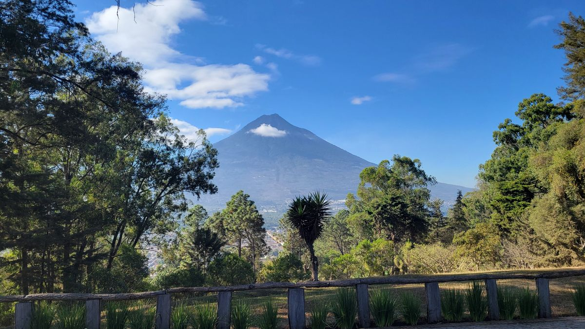
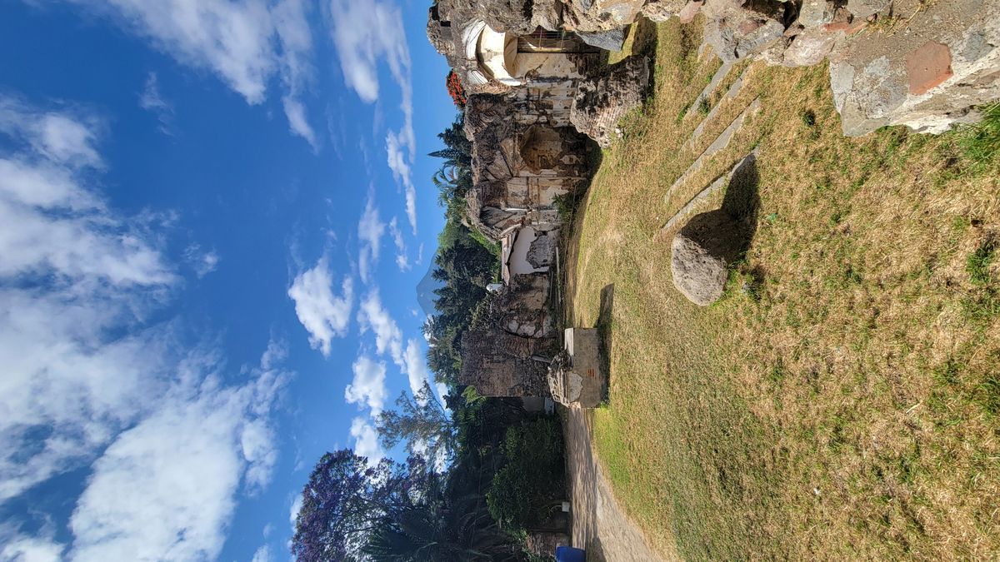
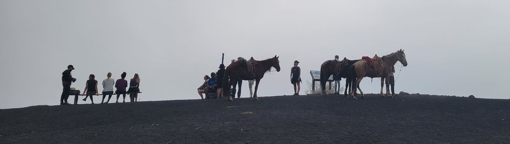
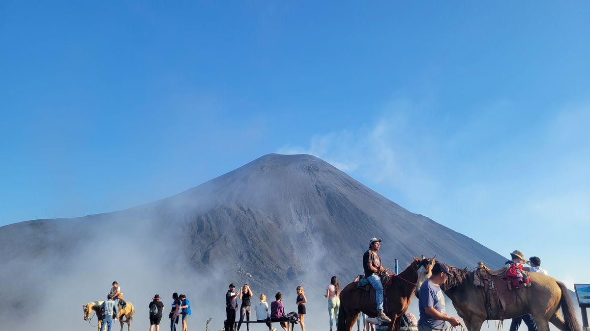
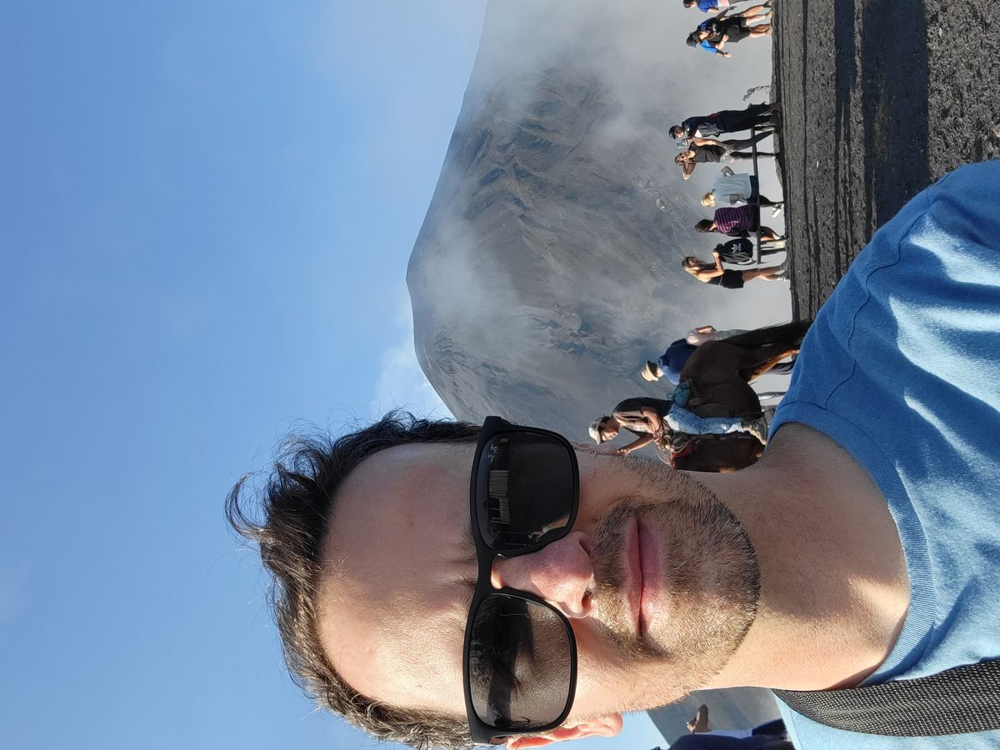
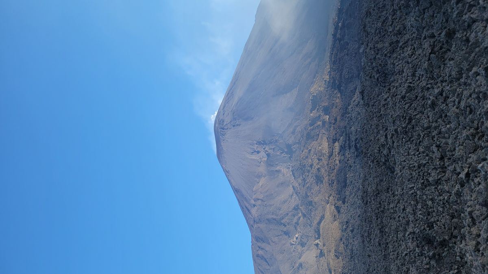
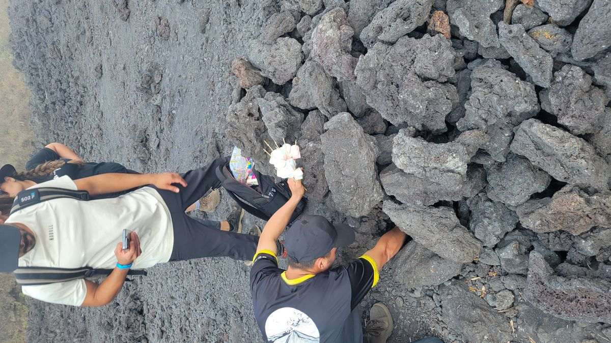

Antigua
Surrounded by active Volcanos, the colonial Guatemalan city of Antigua charms and delights travelers from around the world. Currently, it serves as the hub of the Guatemalan tourism industry with most tours and expeditions beginning and/or ending here. Accommodations and comida (español for food) are available for all budgets and tour companies and language schools dot the streets seeking to part curious tourists from their money (in Guatemala called the Quetzal, after the national bird, the Quetzal, whose tail feathers were used by ancient Mayans as currency).
Like many other Central American colonial cities, the buildings are brightly colored giving a certain vibrancy to the streets unmatched in most other places of the world. The backdrop of the Volcanoes makes the vistas of Antigua unique and astonishing.



I opted for 3 days here. Mostly to rest and process the trauma of flushing myself down underground rivers and tossing myself of precarious cliffsides in Semuc Champey a few days before. But also, to ensure that I could see all of Antigua one could see before heading on. Admittedly, these large, tourist centric cities have not been my favorite parts of this journey but still worth visiting and exploring. Savoring local flavors or just louging in the courtyard of the hostel with a book and a beer help pass the time.
More adventurous tourists can opt for an overnight hike to the Acatenago volcano. 2 days of hiking and one overnight stay in huts on the mountain. I instead opted for the easier half day trek to the Pacaya volcano and roasting marshmallows in the escaping heat from the ground. It was all the adventure I cared to partake of while recovering from Sumec Champey.
The bus ride to Pacaya winds though many mountain villages surrounding Antigua giving a glimpse into everyday life for Guatemalans not vested in the tourism industry. Eventually you arrive at the gates of the Pacaya Volcano park and local boys offer to sell walking sticks to help with your ascent. Horses are available to rent inside the gates for those not desiring much physical activity. I opted for the old-fashioned walking hike and our group lumbered up the mountain slowly, the horse riders following behind.
Unfortunately today we hiked to the summit of a neighboring hill only to find clouds completely obscuring the view of Pacaya. What to do? Mill about and talk to your fellow travelers I guess. People from all over the world visit Guatemala Canadians, Germanys and everyone has various reasons for their travels. Today a lot of people were testing their endurance to judge if they wanted to do the more arduous, overnight Acatenago hike in the coming days.

Thankfully in the following moments the winds picked up a bit, blowing away the coulds obscuring the picturesque Pacaya Volcano. Everyone took the fleeting opportunities to get their selfies and other photos as the clouds moved in and out of the frame. Eventually we all had our fill and continued further down the trail to a lava field where our guides had built a lava rock oven. A bag of marshmallows appeared from someone’s back pack and after impaling them with wooden skewers let the heat of the volcano warm our snack. Carefully wathing out for the “forbidden chocolate chips”, little pieces of lava rock that ended up on the ‘mellows during their roasting.




Antigua was a nice respite from the more adventurous activities from the days before. When visiting Guatemala its nearly impossible to skip this beautiful city and you shouldn’t. The breathtaking vistas from the city streets and the adventures to be had near and far mean Antigua is a sight to be had when in Central America